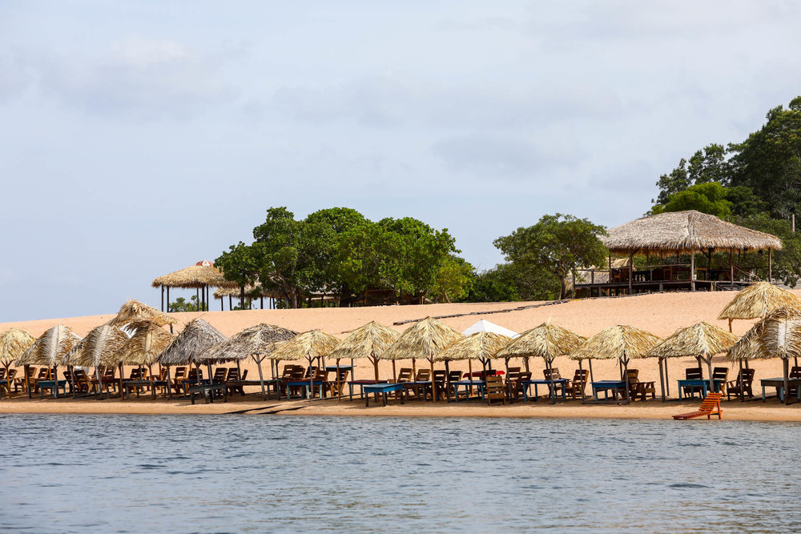

Praias
Conheça praias e lugares para aproveitar a natureza.
TURISMO EM SANTARÉM E REGIÃO
Encontre praias, passeios, gastronomia, cultura e experiências incríveis em Santarém e região.
Explorar destinosDescubra alguns dos principais tipos de experiências disponíveis na região.


Conheça praias e lugares para aproveitar a natureza.
Explore trilhas, florestas e experiências de ecoturismo.
Conheça a história, cultura e tradições da região.
Descubra sabores e pratos da culinária regional.
ROTEIRO EM DESTAQUE
Planeje a visita à Floresta Nacional do Tapajós, em Belterra, com informações para organizar seu dia de ecoturismo.
Hotel Açay — Av. Cuiabá, 2606, Santarém, PA.
Comunidade Maguari — FLONA do Tapajós, Belterra, PA.
Tempo de referência saindo de Santarém; trânsito, condições da estrada e paradas podem alterar o percurso.
Calcular rota no Google MapsTRILHA GUIADA
A caminhada leva à samaúma centenária e passa por floresta, seringueiras, plantas medicinais e histórias da comunidade.
OUTROS ATRATIVOS
AGENDA DA REGIÃO
Fique por dentro das celebrações, festivais e programações de Santarém, Belterra e Mojuí dos Campos.
EM DESTAQUE
ALTER DO CHÃO · SANTARÉM, PA
A tradicional festa de Alter do Chão reúne rito religioso, cultura popular, Festival dos Botos e atrações musicais na vila balneária.
Ver programação oficialFAÇA PARTE DO VIVA SANTARÉM
Guias locais e empresas de transporte credenciados pelo Cadastur podem solicitar inclusão no Viva Santarém.
PLANEJE SUA EXPERIÊNCIA
Informe seus interesses e a Pérola poderá ajudar a encontrar opções de passeios para você.
Olá! Eu sou a Pérola. Posso ajudar você a descobrir Santarém e região.
Olá! Sou a Pérola, assistente de IA do Viva Santarém. Pergunte sobre destinos, cultura, gastronomia ou peça uma sugestão de roteiro.